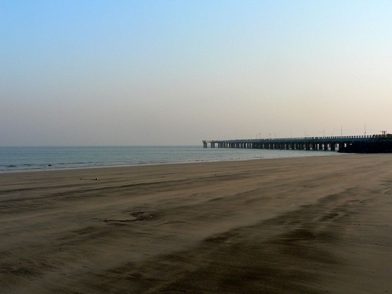
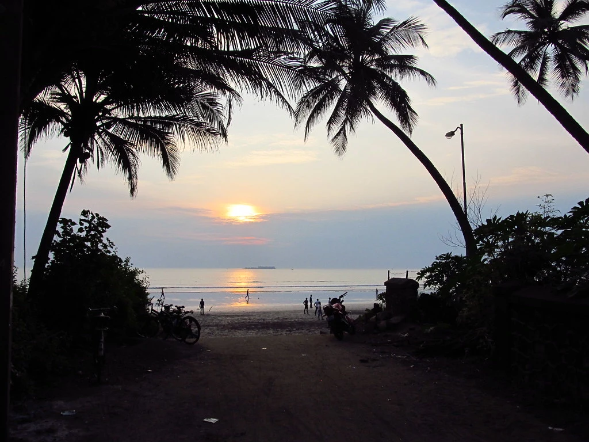
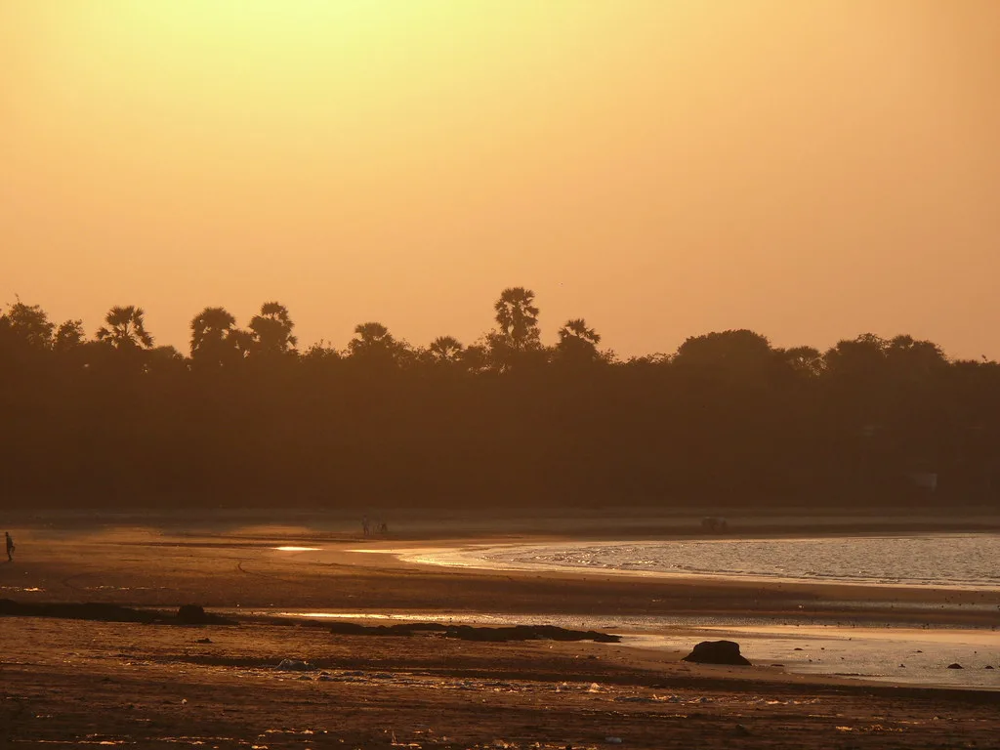

Mandwa Beach is located near the popular town of Alibag in Raigad district of Maharashtra. Mandwa Beach is located in Mandwa village which is well connected to Mumbai by ferry services operating directly between Mumbai and Mandwa. Many visitors visit Mandwa Beach to know about the rich history of the place and enjoy the natural beauty. The beach is free from pollution and is very far from the hustle and bustle of city life. Mandwa Beach is quite popular in Bollywood movies as it has been picturized in Agneepath (1990) and its remake in 2012. One can experience the best sunrise and sunsets on the Mandwa beach. The clean weather and the beautiful and tall coconut trees make Mandwa beach a perfect spot for a mini-vacation. For people who are looking for some adventurous water-sports in the cleanest waters, Mandwa is the perfect spot for adventure seekers as it has water rides like kayaking, banana ride, water scooters, jet skis, etc. Located around 12 km from Alibaug, Mandwa beach is known for its exotic charm and its serene environment and can be reached via buses and private taxis.


